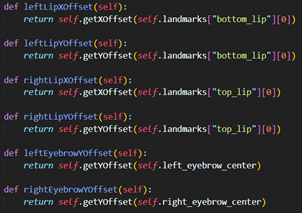

Python was used because it's a popular and powerful language that has a rich ecosystem of libraries for image processing, facial recognition, and running web applications. In the context of the program, it was used to create the itch detection algorithm and host the backend of the web application.
Dlib is a powerful open-source library for machine learning, specifically for object detection and recognition. It is a good choice for itch detection since it can be used to detect and localize objects within an image or video stream. In the context of the program, it was used to identify the facial landmarks from a provided image.
Numpy is a Python library for scientific computing that provides support for multidimensional arrays and matrices. It is widely used in machine learning and image processing applications due to its fast processing speeds and efficient memory management. Within the itch detection algorithm it was used to make various crucial calculations such as mean, magnitude, and standard deviations, as well as for image manipulation.
Pillow and OpenCV are both Python libraries for image processing and manipulation. Both libraries offer for varying levels of image manipulation tasks, such as resizing, cropping, and color adjustment. In the context of the program, they were used to process the image to fit the required format to be used by Dlib for facial landmark detection.
Flask is a lightweight web application framework for Python that makes it easy to build web applications and APIs. It is a good choice for hosting the itch detection algorithm since it provides a simple and efficient way to expose the algorithm as a web service.
HTML, CSS, and JavaScript are the core technologies used for building web pages and web applications. HTML provides the structure and content of the page, CSS provides the styling and layout, and JavaScript provides the interactive and dynamic behavior. In the program, these technologies were used to build a user interface for interacting with the algorithm, such as for displaying the video stream and itch detection results.
Throughout the code and the following explanation there will be many references to the face landmarks, so it’s important to understand what they are, what they represent, and its representation in code.
Face landmarks are a set of coordinates representing different landmarks (key parts) of the face. In Dlib, the library we are using to generate the face landmarks, the following are the landmarks that are detected (72 points total):
· Chin (represents the whole contour of the face, from the bottom of the chin to the top of the level of the eyebrows): 17 points
· Left Eyebrow: 5 points
· Right Eyebrow: 5 points
· Nose bridge: 4 points
· Nose Tip: 5 points
· Left Eye: 6 points
· Right Eye: 6 points
· Top Lip: 12 points
· Bottom Lip: 12 points
In python code, face landmarks are represented as a dictionary (key, value pair) where the key is the landmark type, and the value is a list of coordinates in the form of an <int, int> tuples. Note that the origin of the coordinates is the top left corner, with downwards being positive y, and rightwards being positive x.
Below is an example of a face landmark in python:
When the points are plotted onto an the image used to create the landmarks it looks as follows:
The Itch detection algorithm is comprised of two difference classes, the first being the FaceData class, it’s role being to store and compute information about a face, provided a set of landmarks. The second being the ItchDetection class, it’s role being to compare two different FaceData objects (the calibrated face, and current face to find itch) to deduce the presence and location of an itch.
In more detail, the FaceData class computes the relative offset of the left lip, right lip, and eyebrows compared to the center of the nose. The ItchDetection class then compares these values between the calibrated and face to be detected, and if these differences surpass a certain threshold (which’s calculated based off the size of the face and the sensitivity value), an itch will be detected. The location of the itch can then be determined based off which differences surpassed the threshold, e.g. if the left lip surpassed the threshold while the right lip and eyebrows did not, the itch location will be the bottom left of the face.
Below is a flow chart giving a top level
view of the itch detection described above.
Creating a FaceData object is comprised 3 parts: averaging the landmarks, caching key points, and calculating the maximum standard deviation between the average landmarks.
Averaging the landmarks begins by creating a new dictionary, we then loop through each landmark type and then each coordinate within that landmark, continuously expanding the average landmarks dictionary and averaging the coordinates of all the face landmarks one coordinate at a time.
Caching key points simply consists of calling each function that calculates the key points and storing them into variables, these variables will be used multiple times throughout the code and caching these values will allow us to save computation time. The key point functions will be covered in the next section.
Calculating the maximum standard deviation consists of going through each the 72 face landmark points and calculating the magnitude of the standard deviation across each individual coordinate while accounting for the size of the face represented by chin_mean_distance, and keeping track of the largest standard deviation found.
The key points are additional values that we calculate based off the face landmark that will aid in calculating the offsets (covered in the next section). There are 3 distinct types of key points: the centers, the chin mean distance, and the face y angle
The centers consist of getting the average of one or more landmark’s coordinates, this essentially denotes the coordinate in the center of all the other points.
Above is an example of how to calculate the nose center but for the other centers, they are calculated by averaging the following landmarks:
· Nose center (example above) -> nose bridge + nose tip
· Face center -> chin points
· Eyes mid-point -> left eye + right eye points
· Left eyebrow center -> left eyebrow points
· Right eyebrow center -> right eyebrow points
The chin mean distance is the next distinct type of key points, it’s used to represent the size of the face, it’s obtained by getting the mean absolute distance of the chin points, which is defined as the average absolute deviation from a central point, with the central point being the face center. In the code we start by computing an array of magnitudes between the chin points and the center point, then taking it’s mean.
The face y angle is the final distinct key point, it’s used to represent the face’s y tilt, the y axis being the axis parallel to the camera’s direction of site. The point is used to allow for the comparison between two faces that may have a different y tilt. It is calculated by getting the angle between the horizontal axis and the vector passing through the nose center and eyes mid-point. These two points were chosen as they align perfectly with the horizontal center of the face regardless of what facial muscles are contracted.
The code consists of calculating the arctangent between the y and x coordinate of the difference between the nose center and eyes mid-point coordinates.
The offsets are values that are used to gauge the relative distance of a point in comparison to a certain point on the face. These offset are then compared between the calibrated and the face to itch detect to determine how much the point has moved and thus if an itch was detected. There are distinct types of functions that help with calculating the offset: distance to vector, axis offset, landmark offset
The distance to vector function is the most important function to calculating the offsets. The purpose of a the function is to calculate the perpendicular distance between a point and a vector. The inputs it gets given a point the vector should pass through, the angle of the vector, and the point who’s distance we’re trying to calculate.
In code, we first start by caclulating the
directional vector based on the angle given and calculating the difference vector between
the point to check and point on vector. We then caclulate the cross product
between the directional vector and the difference vector to get the area of the
parralelogram and devide it by the magnitude of the directional vector to
obtain the perpendicular distance of the point. The absoulte value of the
distance is then taken to ensure that the result is positive.
The axis offset functions are an intermediary between the distance to vector function and the landmark offset functions. The function takes the point who’s distance we’re trying to calculate a parameter and calling the distance to vector function with a preset point on vector and angle. The nose center point is used as the point of vector as the point consistently stays in the same position due to our lack of facial mobility in the nose area. For the x offset, the angle provided is the face’s y angle, and for the y offset the angle it’s the face’s y angle with an additional pi/2 radians (or 90 degrees)
The landmark offset function’s main purpose is to act as a abstraction for the FaceData class. They simply call the axis offset functions with a preset argument for the point to check. It ensures consistency, which’s important as these will be the functions called by the ItchDetection class when comparing the offsets between faces.

There are two types of calibration methods within the itch detection class, the main one being on the fly calibration, and the second being instant calibration. They both achieve the same purpose of eventually creating a calibrated FaceData object and then computing the lip and eyebrow thresholds.
On the fly calibration is meant as a form of calibration where the data comes in a stream, such as when analyzing a live video feed. It’s the main type of calibration that is used in the program as it is the calibration method used by the backend (see backend section) of the test server.
In code, you would call the startCalibration function to begin calibration, which will reset the array of calibration objects and set the calibration state to false. Then while the calibration state is false, externally in the program the calibrate function will be called with a face landmark as the argument, this will expand the array 1 object at a time until it reaches the required calibration count and finalizes calibration by calling calibrateFace.
Instant calibration is much simpler and just involves taking a face landmark list as an argument and assigning it to the calibration objects array. Then the calibrateFace function is called
Once the calibration objects array has been filled with the relevant face landmarks, the calibrateFace function creates a new FaceData object using the contents of the array and assigns it as the calibrated face. Additionally, the setTresholds function is called which computes the lip and eyebrow thresholds, which will determine how much movement is required to indicate an itch. These values are calculated based off the chin mean distances representing the size of the face, the sensitivity which’s modifiable by the user, and the base sensitivity scalar which’s modifiable in the config file.
To update the sensitivity the updateSensitivity function can be called which will modify the sensitivity values and recalculate the thresholds if there exists a calibrated face
To compare the offsets between two faces we first need to account for the scale difference between the faces, as a face’s offset is proportional to it’s size. Using the scale difference we can then make a scaled comparison between two offsets and allow us to calculate the offset difference.
The calcScaleDifference calculates the scale difference between the current face and the calibrated face by dividing the calibrated face’s chin mean distance with the current face’s, this gives the value that we should multiply with the offset of the current face to calculate the scaled comparison. We must take the absolute value of the result of the scaled comparison calculation to ensure that the value is positive.
To get the left lip and right lip offsets we calculate the sum of their individual x and y offsets by plugging in the correct arguments into the scaled comparison function, and similarly for the eyebrow offset we calculate the sum of both their y offsets.
Once we’ve calculated the left lip offset, right lip offset, and eyebrow offset, we can plug in the values into the findItchLocation function to determine the itch location.
To more easily understand what’s happening the function, here’s a flow chart that explains the process:
When wanting to detect an itch you would call the ItchDetection class’s detectItch function which takes in a face landmark as an argument and returns a dictionary containing a lot of useful data which we call itchData. The detectItch function is in charge of creating the current face, calling the offset functions, and the findItchLocation function, and adding some debug important debug data such as the calibration accuracy, the computed thresholds, and the offsets. the itchData object is a dictionary to allow for straight forward JSON serialization as this data will be the API response that will be sent to the frontend.
The backend is built using flask and is comprised of only one page and several API endpoints for using the itch detection algorithm.
There are three API endpoints are for starting calibration, updating sensitivity, and detecting an itch.
The starting calibration endpoint is very simple, it just calls the startCalibration function of ItchDetection to begin on the fly calibration. it’s URL route is “/api/calibrate”, accepts a POST request, and doesn’t require any additional data in the body.
The update sensitivity endpoint has URL route “/api/update_sensitivity”, accepts a POST request, and expects two float values lip_sensitivity and eyebrow_sensitivity in it’s body. The function attempts to parse the sensitivity values to float values, and returns an error if it fails, otherwise it will call the updateSensitivity function of the ItchDetection class with the sensitivities as arguments.
The detect itch endpoint has URL route “/api/detect”, accepts a POST request, and expects a base64 string value “image” representing a .png or .jpg image converted to a base 64 string in it’s body.
The function starts by converting the image to bytes, then calling the get_landmarks function (see next section) with the image in bytes as an argument. If no face landmark is found on the image, a no face detected response is returned. Alternatively, if the ItchDetection algorithm isn’t calibrated, the calibrate function from the ItchDetection is called for on the fly calibration. Otherwise, the detectItch function in the ItchDetection class is called and the ItchData is returned.
The get_landmarks function takes in a image in bytes as a parameter, and returns a face landmark. Firstly, a Pillow image is created from the byte image. The image is then converted to RGB format and placed into a NumPy array, this step is crucial as the face recognition module can only process RGB images. Additionally, the RGB frame is resized using the OpenCV library by a resize factor defined in the config file, this will quadratically speed up the processing time of the image at the expense of some accuracy. Finally, as the face_landmarks function from the face recognition modules returns a list, we destructure it to return the first element of the list, but returning None if the list is empty. We only return one set of face landmarks as the algorithm is meant to only analyse one person at a time.
The frontend is built using HTML, CSS, and JavaScript. There is only one simple page which displays the webcam capture, a few buttons and textboxes for calling the calibration and updating sensitivity, and text for displaying the ItchData output from the Itch Detection algorithm. Note: the HTML page also contains a hidden canvas that will serve as a way for us to capture a frame of the video player.
To initialize the webcam video feed we start by getting a reference to the html video player, as well as the canvas and it’s context which we will need later. Secondly, we check if the navigator.mediaDevices.getUserMedia is an available function on the current browser, if so we request permission from the user to access their video camera which we set as the source of the video.
To capture the frames from the video, we start by adding an event listener to the HTML video object which will detect when the video starts playing and will call an anonymous function. The anonymous function checks if the video player is uninterrupted and will draw the current video frame onto the canvas, it then calls and awaits for the response of the asynchronous detectItch function (see next section) before setting a timeout for the function to call itself after a some milliseconds, thus creating a constant loop (that only ends when the video player is interrupted).

Once we’ve captured the video frame and drawn it onto the canvas, the detectItch function is called. This function’s purpose is to encode the canvas’ image as a base 64 string and send a POST request to the “/api/detect” endpoint of the server.
In code, we create a base 64 encoded image data URL for the current image on the canvas, we then extract the base 64 encoded image from the data URL by removing the URL prefix. Afterwards, a POST request for the “/api/detect” endpoint of the server is made inside a try block, passing in the base 64 string into the body of the request. If the request is successful, we parse the ItchData into JSON and update the display text with it, otherwise if there is an error, we update the display text with an error message instead.